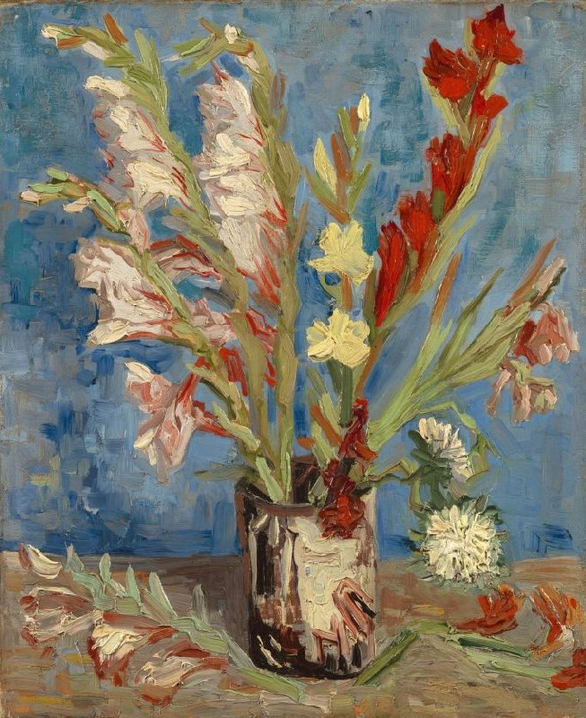

作品名 「アスターとグラジオラスの花瓶」
花言葉 「密会」「用心」「思い出」「忘却」「勝利」
グラジオラス
「密会」
グラジオラスという名前は、名前は古代ローマの剣であるグラディウスに由来し、葉が剣に類似していることが根拠と言われています。花言葉の「密会」「用心」は、古代ヨーロッパにおいて、人目を忍ぶ恋人たちがこの花の数で密会の時間を知らせていたことに由来します。
アスターとグラジオラスの花瓶
フィンセント・ファン・ゴッホ
1886年の夏、ゴッホがパリで描いた35点以上の花の静物画のうちの1点である。彼は花の絵が高く売れることを望んでいた。また、これらは色彩の使い方や、ゆるい画風の練習でもあった。この作品では、緑と赤、あるいは青とオレンジを並べ、補色で強い色のコントラストをつけることに取り組んだ。この技法は、ゴッホが敬愛した画家ウジェーヌ・ドラクロワ（1798-1863）の色彩論の基礎となるものである。
| 作品名 | アスターとグラジオラスの花瓶 |
| 作者 | フィンセント・ファン・ゴッホ |
| 制作年 | 1886年 |
| 種類 | キャンバス・油彩 |
| 寸法 | 46.5cm×38.4cm |
| 所蔵 | ファン・ゴッホ美術館 |